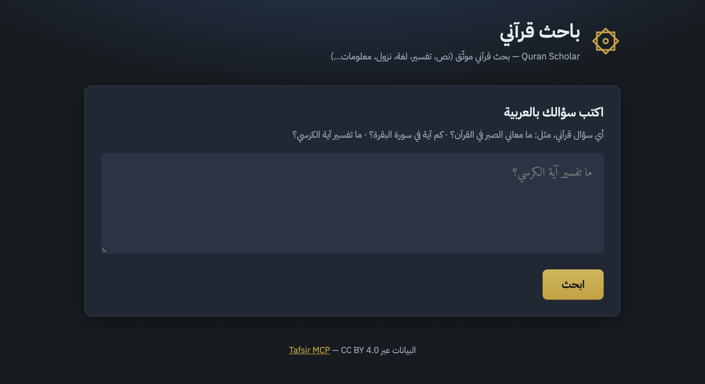

Quran Scholar
A multi-agent system for grounded Quranic researchباحث قرآني متعدد الوكلاء
A multi-agent system for grounded Quranic researchباحث قرآني متعدد الوكلاء
Hadeel Alhajri · SDAIA Academy
Overview
Overview
General LLMs invent Quranic wording, verse numbers, and tafsir attributions with high confidence.
Overview
System architecture

System architecture · LangGraph
%%{init: {"flowchart": {"useMaxWidth": true, "htmlLabels": true, "curve": "basis", "nodeSpacing": 18, "rankSpacing": 28}}}%%
flowchart TD
START([START])
P[Planner]
RM[Research Manager]
QR[Quran Researcher]
TR[Tafsir Researcher]
LR[Linguistic Researcher]
CR[Context Researcher]
GA[Gap Analyzer]
TC[Tafsir Comparator]
RG[Report Generator]
MCP[(Tafsir MCP)]
QT[Quran Tools]
TT[Tafsir Tools]
LT[Linguistic Tools]
CT[Context Tools]
ENDNODE([END])
START --> P
P --> RM
RM -.-> QR
RM -.-> TR
RM -.-> LR
RM -.-> CR
QR --> QT
TR --> TT
LR --> LT
CR --> CT
QT --> MCP
TT --> MCP
LT --> MCP
CT --> MCP
MCP -.-> QR
MCP -.-> TR
MCP -.-> LR
MCP -.-> CR
QR --> GA
TR --> GA
LR --> GA
CR --> GA
GA -.->|"Insufficient evidence"| RM
GA -.->|"Sufficient evidence"| RM
RM -.->|"comparison"| TC
RM -.->|"finish"| RG
TC --> RG
RG --> ENDNODE
classDef agent fill:#e8f0ee,stroke:#2d5a4a,stroke-width:1.5px,color:#1a2e28
classDef tools fill:#f3ebe0,stroke:#a67c52,stroke-width:1.5px,color:#1a2e28
classDef mcp fill:#1a2e28,stroke:#c4a574,stroke-width:1.5px,color:#faf7f2
classDef terminal fill:#fff,stroke:#3d7a64,stroke-width:1.5px,color:#1a2e28
class P,RM,QR,TR,LR,CR,GA,TC,RG agent
class QT,TT,LT,CT tools
class MCP mcp
class START,ENDNODE terminal
System architecture · nodes
Node 1 · no toolsSystem architecture · nodes
Node 2 · sole router · no toolsSystem architecture · nodes
Node 3 · MCP toolsSystem architecture · nodes
Node 4 · MCP toolsSystem architecture · nodes
Word/root study when planned. Tools: analyze_word, find_root_occurrences, get_root_stats.
Asbab al-nuzool أسباب النزول when planned. Tools: fetch_nuzool_reason, source lists.
System architecture · nodes
Node 7 · deterministic · no toolsSystem architecture · nodes
Optional. Only if Manager chooses comparison. Contrasts mufassirs using collected tafsir evidence.
Final Arabic الإجابة + الأدلة. Must cite exact evidence labels — then END.
System architecture · MCP
Design considerations
Plan first · Parallel execution · Hallucination guards
Consideration 1
Consideration 2
Consideration 3
والحمد لله رب العالمين
Hadeel Alhajri